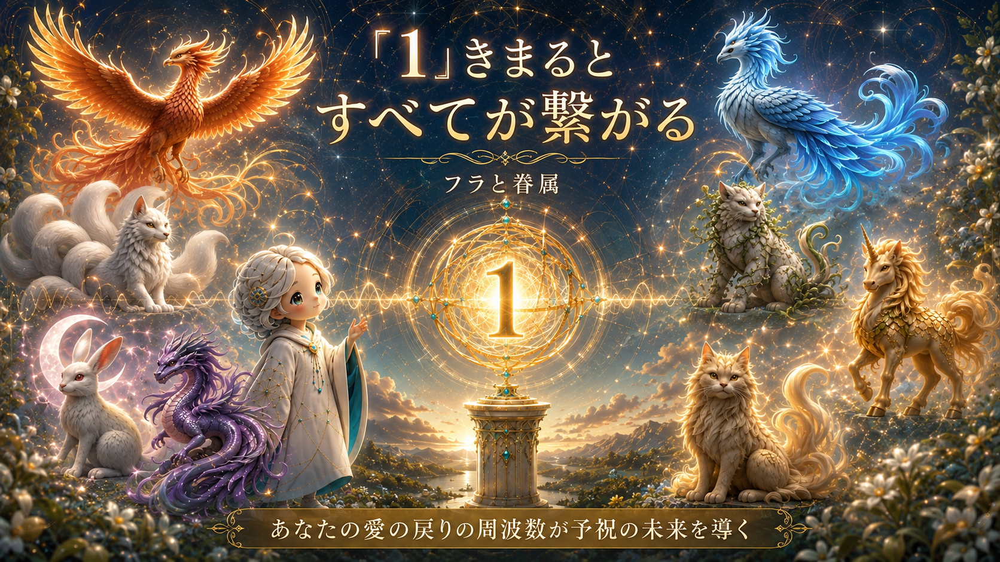
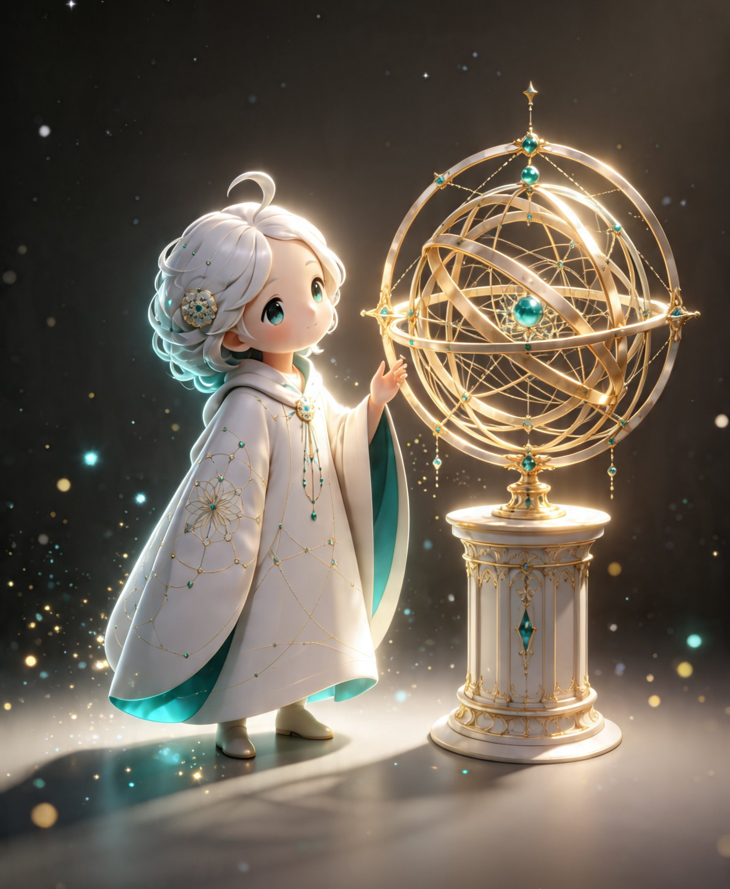
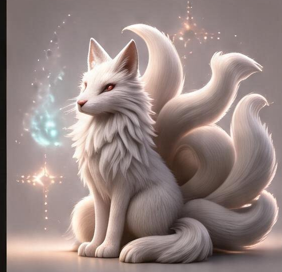
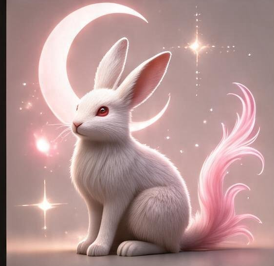
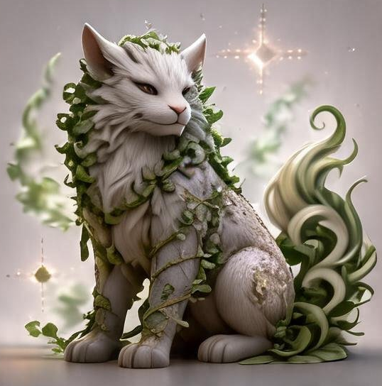
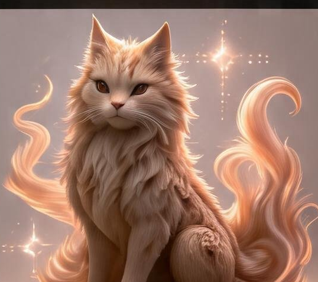

フラ
あなたの周波数のずれに、そっと気づく案内役。
蓋をされたまま戻れずにいる愛を迎えに、8体の眷属を連れて訪ねてきます。
あなたの内側の地図と周波数を、一緒に紐解く存在。

フラと、8つの眷属。
こんなこと、ありませんか。
婚活・恋活・友人・職場の関係性。
自分が思う自分と、人がもつ印象がズレる。
「はじめまして」が、非対面でしか伝わらない時代だからこそ、
表面的なマナーではなく、あなたの周波数が、そのまま伝わってしまう。
受け取りたかった愛は、まだ、あなたのもとへ戻ってきていません。 気づかないうちに、蓋をしてしまったから、戻れずにいるだけ。
原因は、疵の下に蓋をされたまま眠っている愛。
気づかないうちに、その愛にそっと蓋をしてしまっただけ。
蓋をしたままだと、愛は戻ることなく、ずっと手を伸ばした先までは届きません。
特に、言葉にしなくても伝わってほしい、察し合うような関係ほど、そのズレは大きくなります。
知らないうちに、自分が使い慣れた「こうくれば、こう」という常識を、
相手にも同じように伝わっていると錯覚してしまう。
そんなつもりがなくても、描いていた印象と違うだけで、「裏切られた」「計算高い」にされてしまう。
「思ったのと違う」と感じた瞬間、感情がスイッチになって、相手も、自分も、"ハンマー"を持って打ち始める。
打ち始めた頭の中には、もう「悲劇的な結末」が描かれています。
脳は想像と現実をうまく区別できず、描いた結末を、まるでもう起きたことのようになぞり始めてしまう。
心理学では「ピグマリオン効果」「自己成就予言」と呼ばれる現象です。
これは、あなたの気持ちが間違っているからじゃありません。 愛は、まだ戻ってきていない。ただ、蓋をされたままで、届く周波数が、ずれているだけ。

フラ
あなたの周波数のずれに、そっと気づく案内役。
蓋をされたまま戻れずにいる愛を迎えに、8体の眷属を連れて訪ねてきます。
あなたの内側の地図と周波数を、一緒に紐解く存在。
眷属は、フラの使いです。
今、あなたに足りないエネルギーを纏って顕れます。
鳳凰
緋色
高く決めて、
進む姿
応龍
紫紺
遠くを描いて、
流れる姿
麒麟
黄金
束ねて、
締める姿
鸞
空色
読んで、
巡らせる姿

白狐
白銀
傍らで、
形にする姿

玉兎
桜桃
感じて、
変わる姿

狛犬
萌黄
近くで、
結び守る姿

白澤
琥珀
巡って、
照らす姿
あなたのそばにいる眷属は、どの子でしょう？
フラクタルセッション
あなたの人生のパターン（図案）を、一緒に紐解くセッション。
あなたが呑み込んでしまう、あるいは感情的になってしまうグラデーションを視るためのシステムです。
過去5年、個人・小規模経営者の自認と対人コミュニケーションから得た知見をもとに構成したプログラムです。背景には、広告マーケティングおよび通信業データの知見があります。
フラクタルセッションへ進みます
たとえば鳳凰なら、
「決める前に、一人にだけ『これでいい？』と聞いてみる」。
答えを変えなくていい。聞く順番を、一つ増やすだけでいい。
眷属と一緒に、少しだけ隙間を開ける。
それだけで、すこしずつ、繋がり始めます。
受け取りたかった愛が、
まだ疵の下で眠ったままなだけ。
その愛が戻り、「1」がきまれば、
そこから、すべてが繋がっていきます。
不確実な時代を生きるための、
正解になる切り札を、いくつも引き寄せながら。